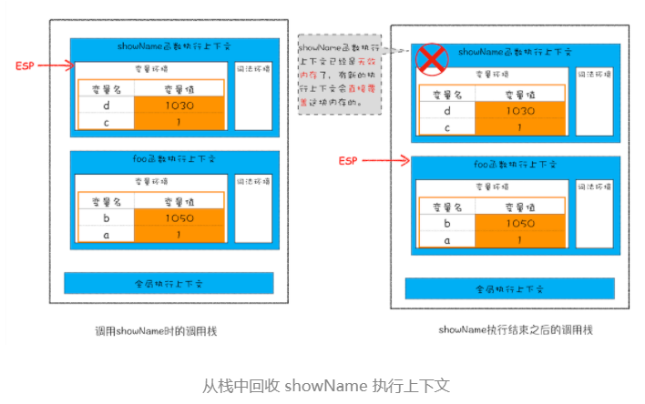
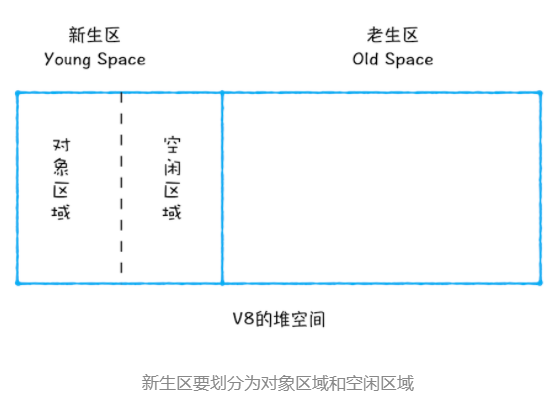
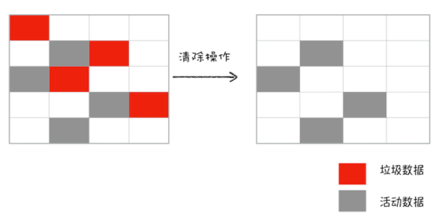
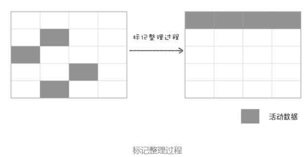
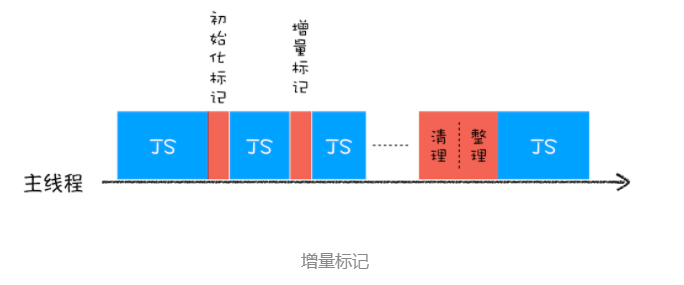

JavaScript、Java、Python 等语言，产生的垃圾数据是由垃圾回收器来释放的，并不需要手动通过代码来释放。
1、调用栈中的数据如何回收
1 | function foo(){ |
执行到 showName 函数时，那么 JavaScript 引擎会创建 showName 函数的执行上下文，并将 showName 函数的执行上下文压入到调用栈中，最终执行到 showName 函数时，其调用栈就如下图所示。与此同时，还有一个记录当前执行状态的指针（称为 ESP），指向调用栈中 showName 函数的执行上下文，表示当前正在执行 showName 函数。
接着，当 showName 函数执行完成之后，函数执行流程就进入了 foo 函数，那这时就需要销毁 showName 函数的执行上下文了。ESP 这时候就帮上忙了，JavaScript 会将 ESP 下移到 foo 函数的执行上下文，这个下移操作就是销毁 showName 函数执行上下文的过程。

所以说，当一个函数执行结束之后，JavaScript 引擎会通过向下移动 ESP 来销毁该函数保存在栈中的执行上下文。
2、堆中的数据是如何回收的
代际假说（The Generational Hypothesis）：
- 第一个是大部分对象在内存中存在的时间很短，简单来说，就是很多对象一经分配内存，很快就变得不可访问；
- 第二个是不死的对象，会活得更久。
分代收集：
在 V8 中会把堆分为新生代和老生代两个区域，新生代中存放的是生存时间短的对象，老生代中存放的生存时间久的对象。新生区通常只支持 1～8M 的容量，而老生区支持的容量就大很多了。对于这两块区域，V8 分别使用两个不同的垃圾回收器，以便更高效地实施垃圾回收。
- 副垃圾回收器，主要负责新生代的垃圾回收。
- 主垃圾回收器，主要负责老生代的垃圾回收。
垃圾回收器的工作流程：
不管是主垃圾回收器还是副垃圾回收器都遵循以下这套公共的执行流程：
1、标记空间中活动对象和非活动对象。所谓活动对象就是还在使用的对象，非活动对象就是可以进行垃圾回收的对象。
2、回收非活动对象所占据的内存。其实就是在所有的标记完成之后，统一清理内存中所有被标记为可回收的对象。
3、内存整理。频繁回收对象后，内存中就会存在大量不连续空间，我们把这些不连续的内存空间称为内存碎片。当出现量不连续的内存碎片后，我们再想分配一个较大的连续空间就会出现内存不足的情况。
3、副垃圾回收器
副垃圾回收器主要负责新生区的垃圾回收，用Scavenge 算法来处理。其原理就是：把新生代空间对半划分为两个区域，一半是对象区域，一半是空闲区域，新加入的对象都会存放到对象区域，当对象区域快被写满时，就需要执行一次垃圾清理操作。

其回收过程如下：
1、对对象区域中的垃圾做标记，活动对象和非活动会对象；
2、标记完成之后，就进入垃圾清理阶段，副垃圾回收器会把这些仍然存活的对象复制到空闲区域中，同时它还会把这些对象有序地排列起来，所以这个复制过程，也就相当于完成了内存整理操作，复制后空闲区域就没有内存碎片了。
3、完成复制后，对象区域与空闲区域进行角色翻转，也就是原来的对象区域变成空闲区域，原来的空闲区域变成了对象区域。
对象晋升策略：由于为了执行效率，新生区的空间通常会被设置的比较小，所以很容易被存满，为此JavaScript引擎引入了晋升策略，即：经过两次垃圾回收依然还存活的对象，会被移动到老生区中。
4、主垃圾回收器
老生区中的对象有两个特点，一个是对象占用空间大，另一个是对象存活时间长。
主垃圾回收器是采用标记 - 清除（Mark-Sweep）的算法进行垃圾回收的。
1、对垃圾数据做标记。当调用栈中的ESP指向下一个执行上下文后，上一个执行上下文中引用对象在堆中的数据就会被当做垃圾数据被标为红色，而当前正被ESP指向的指向上下文中指针指向的栈中数据会被标为活动数据。
2、垃圾数据的清除。使用Mark-Sweep算法清除掉被标记为红色的垃圾数据。

3、内存整理。使用标记 - 整理（Mark-Compact）对内存碎片进行整理。

5、全停顿
于 JavaScript 是运行在主线程之上的，一旦执行垃圾回收算法，都需要将正在执行的 JavaScript 脚本暂停下来，待垃圾回收完毕后再恢复脚本执行。我们把这种行为叫做全停顿（Stop-The-World）。
为了降低老生代的垃圾回收而造成的卡顿，V8 将标记过程分为一个个的子标记过程，同时让垃圾回收标记和 JavaScript 应用逻辑交替进行，直到标记阶段完成，我们把这个算法称为增量标记（Incremental Marking）算法。如下图所示：

使用增量标记算法，可以把一个完整的垃圾回收任务拆分为很多小的任务，这些小的任务执行时间比较短，可以穿插在其他的 JavaScript 任务中间执行，这样当执行上述动画效果时，就不会让用户因为垃圾回收任务而感受到页面的卡顿了。